How to use Koalino
From the first download to your first transcript, on your computer, your phone and in the browser. Every step takes a minute or two.
1Install it on your computer
Download Koalino for your system from the download section. It comes with everything it needs, speech models included, so it works offline straight away. There's nothing to sign up for.
Windows
-
Run
koalino-windows-x86_64-0.2.0-setup.exe, or on an ARM64 laptop (Snapdragon, for example)koalino-windows-arm64-0.2.0-setup.exe. - Koalino isn't code signed yet, so Windows may warn you about it: choose More info → Run anyway.
- Press Next through the setup. It installs for you alone and needs no administrator rights; Koalino appears in the Start menu and on the desktop.
Rather not install anything? The portable version is a single
.exe that runs Koalino from wherever you put it, a USB stick included.
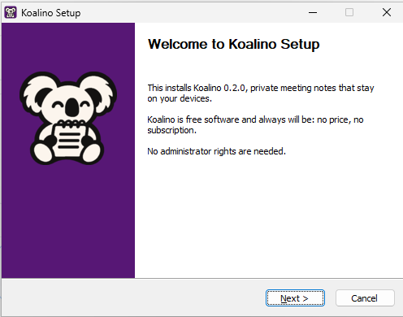
Linux
On Debian or Ubuntu open the .deb, on Fedora or openSUSE the .rpm,
and your software center installs it; on any other distribution use the Flatpak. Koalino
then appears in your applications menu. On ARM64 computers there are arm64
and aarch64 packages, or the tarball; no Flatpak yet.
macOS
The Mac version is experimental and hasn't been tried on real Macs yet. If you have one, help us test it.
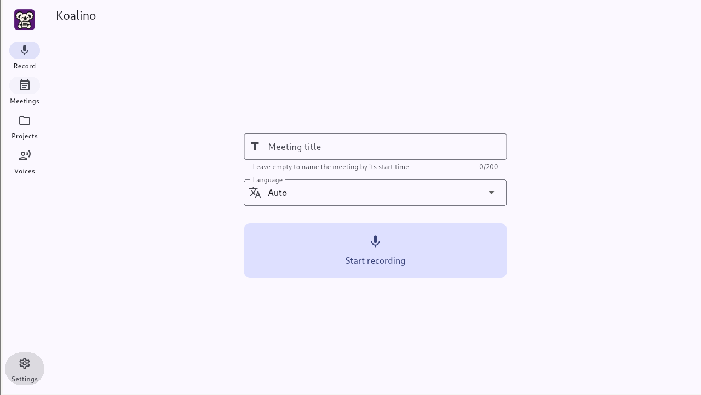
2Install it on your phone or tablet
Koalino runs on Android phones and tablets with a 64-bit processor, which means nearly every device from the last several years.
- On the phone, open this site and tap Download APK in the Android card.
- Open the downloaded file. Android asks whether your browser may install apps: allow it, then tap Install.
- Open Koalino. Allow the microphone when you start your first recording, and notifications, so you can see and stop a recording from the notification shade.
Koalino is coming to F-Droid, which will keep it up to date for you. There's no iPhone or iPad version yet.
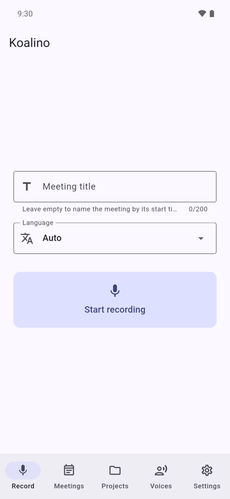
3Add the browser extension
For meetings you join in a web browser, the Koalino extension records the call's sound (and shared slides) and hands it to the Koalino app on the same computer. Nothing goes anywhere else.
-
Firefox: open
Koalino on Firefox Add-ons
and press Add to Firefox. Firefox keeps it up to date.
Chrome, Edge, Chromium: download the extension zip and unzip it. Openchrome://extensions(edge://extensionsin Edge), turn on Developer mode, choose Load unpacked and pick the unzipped folder. -
Let the extension talk to the app, once per computer. In a terminal, from
Koalino's folder, run
browser-host install:-
Windows:
& "$env:LOCALAPPDATA\Programs\Koalino\browser-host.exe" installin PowerShell; - Linux (
.debor.rpm):/opt/koalino/browser-host install.
-
Windows:
- Pin the koala to the toolbar (the puzzle-piece menu in Chrome and Edge) and click it. With the Koalino app open, Check connection says Connected to the Koalino app. If the popup asks for access to the meeting sites, press Allow on meeting sites.
Firefox's add-on site still has version 0.1.6, which records Teams only. Version 0.2.0, which records calls on any site as described below, is waiting for Mozilla's review, and Firefox will update to it by itself.
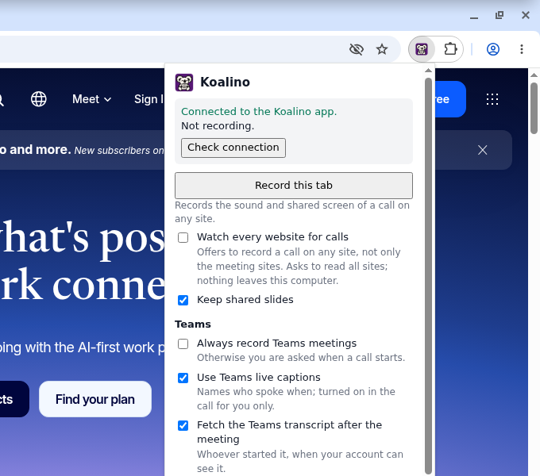
4Pair your devices so they sync
Paired devices share every meeting, note and photo with each other directly, end-to-end encrypted, with no server in between. Recorded something on your phone? It shows up on your computer, and the other way round. You pair two devices once; after that they catch up whenever they can reach each other.
Start on the computer: Settings → Devices. Give it a name you'll recognize with the pencil (here, Work laptop), and do the same on the phone.
From anywhere: with an invite
- On the computer, press Show invite. A QR code and a link appear.
- Scan the QR code with the phone's camera app to copy the link (or send the link to yourself). In Koalino on the phone, open Settings → Devices → Use invite, paste it and tap Find device. Then tap Pair.
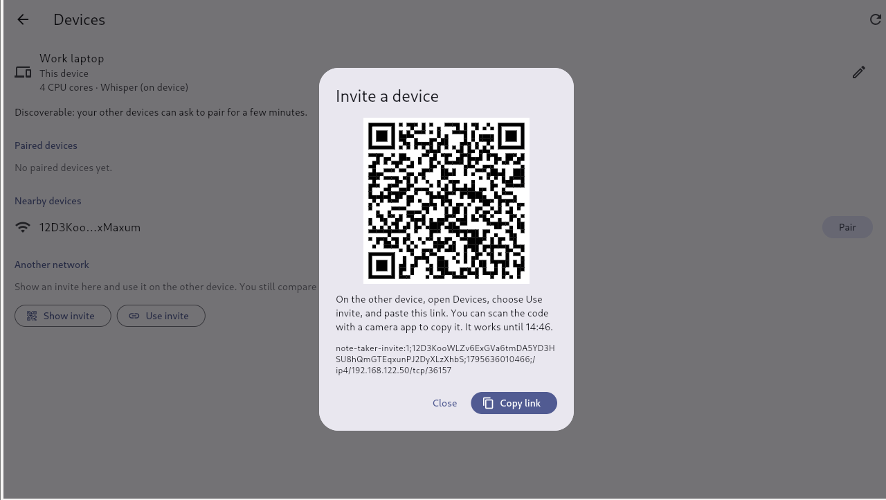
On the same Wi-Fi: even simpler
When both devices are on the same network, press Make discoverable on one; the other lists it under Nearby devices. Tap Pair.
Compare the code
Both devices now show the same six-digit code. It proves that you're pairing with your own device and nobody in between. If the codes match, press Accept on one and Codes match on the other.
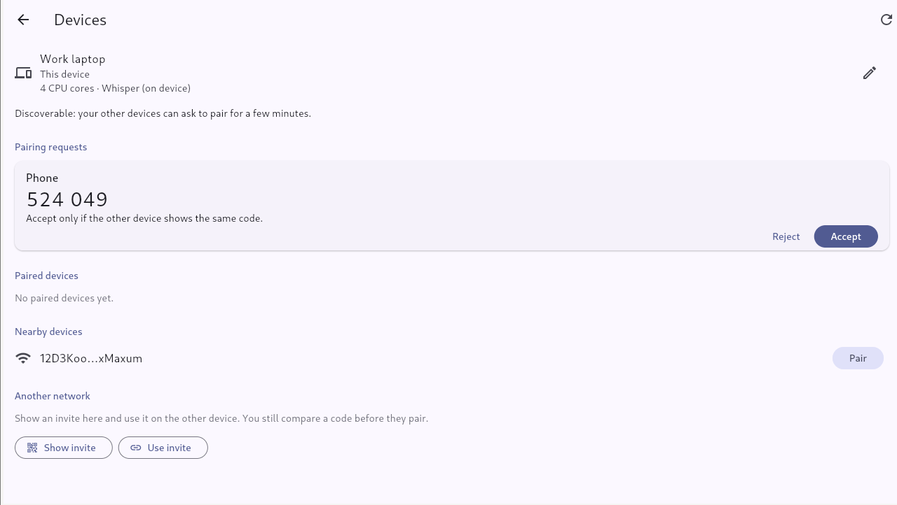
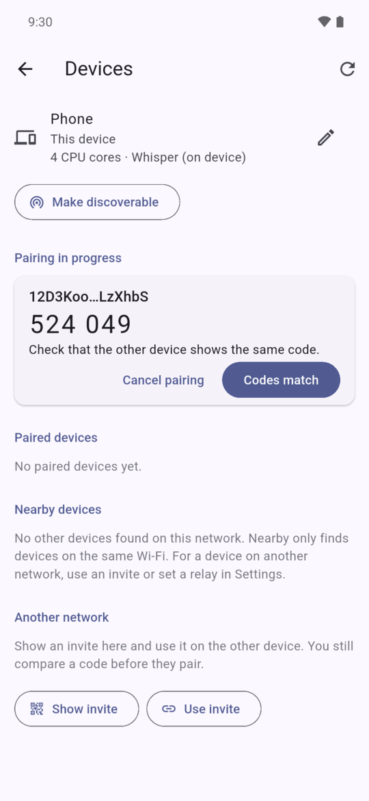
That's it: each device lists the other under Paired devices, Online while they can reach each other, and when they last synced. Pair more devices the same way; each one syncs with all the others.
Paired devices sync whenever they can reach each other, as on the same Wi-Fi. For devices that are rarely on the same network, set up a relay in Settings: a Koalino home server, for example, that all your devices can reach.
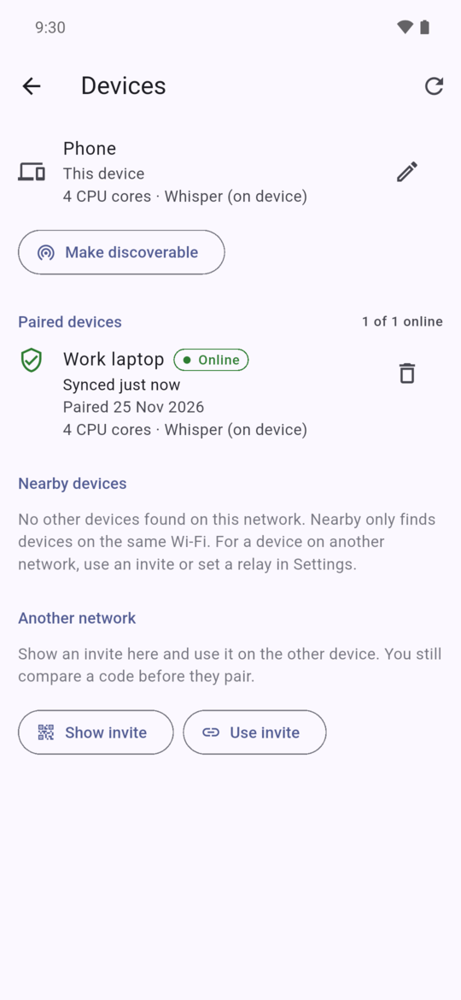
5Record a meeting in the room
- Put your phone or laptop on the table and open Record. Type a title if you like (otherwise the meeting is named by its start time), and leave the language on Auto or pick the one people will speak.
- Press Start recording. The transcript appears a few seconds after each pause in speech, with who spoke when. Pause it for a break, and use Attach files or the camera for slides and whiteboards.
- Press Stop at the end. The audio is deleted once it's transcribed: only the text stays, unless you choose to keep recordings in Settings.
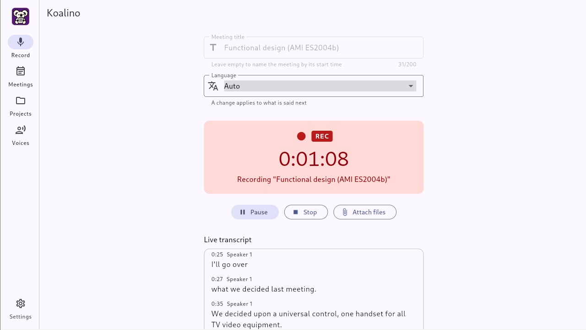
The meeting is then in Meetings, on every paired device. Write notes next to the transcript, correct a passage with a long press or a right-click, and name the voices in Voices, or by double-clicking or long-pressing a speaker's name in the transcript: Koalino then recognizes those people in later meetings. With an AI connection set up in Settings, it can also write a summary.


6Record an online meeting in the browser
Join the call as usual: Teams, Google Meet, Zoom, Jitsi, Webex or Whereby in the browser, with the Koalino app open. As soon as someone speaks, the extension asks:
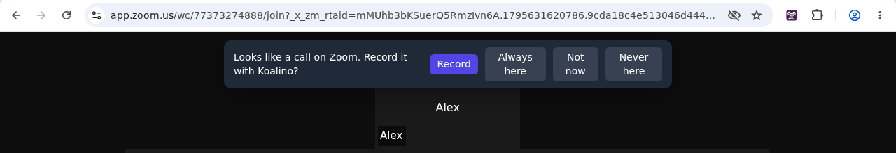
- Record records this call; Not now doesn't.
- Always here records every call on this site without asking; Never here stops asking on it. You can forget these choices in the popup.
While it records, a small banner and a REC badge on the koala say so. Press Stop, or just leave: the recording ends with the call, and the meeting appears in Koalino, transcribed like any other.
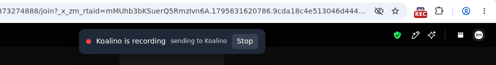
Calls on other sites
For a call anywhere else, open the popup and press Record this tab. Or turn on Watch every website for calls, and the extension offers to record calls on any site. It needs permission to read all sites for that, and nothing leaves your computer.
Calls in desktop apps
Koalino can also record calls in the Zoom, Teams or other desktop apps, together with your microphone, and offers to start when one begins.
Tell the other participants that you're recording, and follow your local laws. A short notice to paste in the meeting chat is ready to copy.
Stuck, or something doesn't work as described here? Tell us. More details on every platform are in the README.